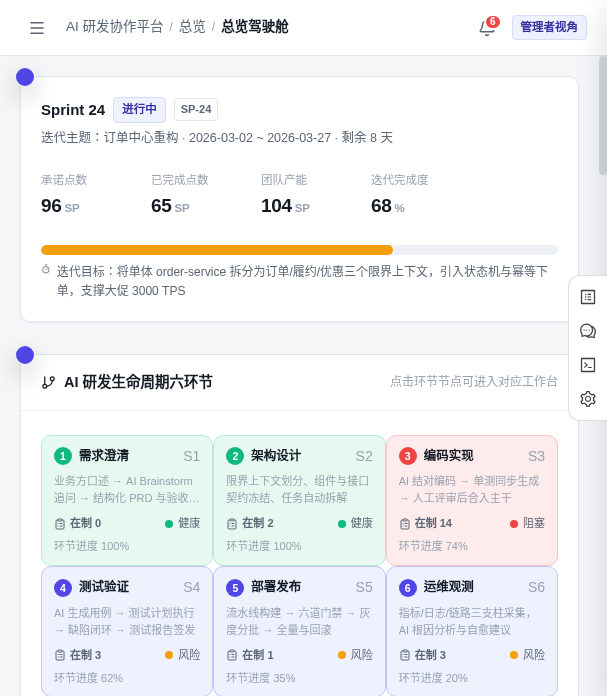
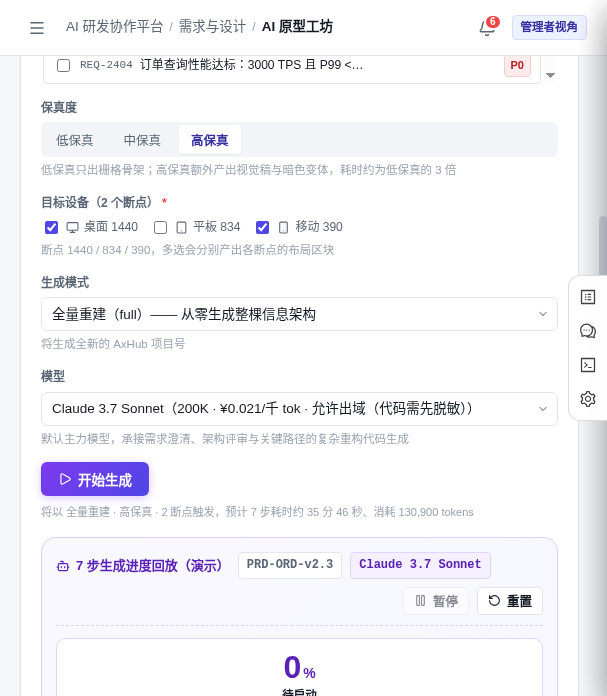
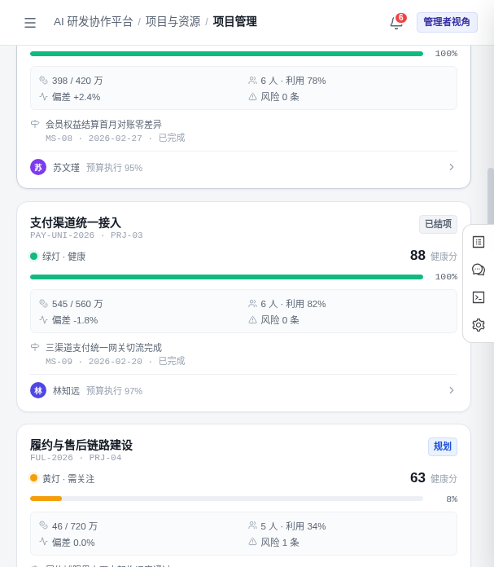
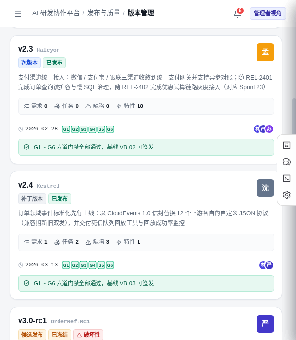
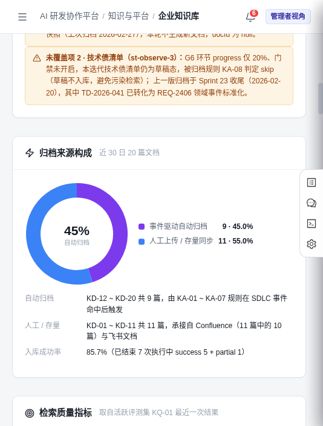

最近翻一个内部原型，看到一个挺有意思的东西。
一个叫 ARTISAN SDLC CONSOLE 的 AI 研发协作控制台。
有意思在哪呢。现在市面上 AI 编程工具一堆，Cursor、Copilot、各种 Agent，全盯着「写代码」这一段使劲。但一个软件从需求到上线，中间要过多少关，干过研发的都心里有数。
需求怎么拆。架构怎么定。测试怎么跑。发布怎么卡门禁。出了故障谁来兜底。
这些环节，AI 其实还没真正渗透进去。大部分团队还是靠人脑、靠文档、靠微信群里来回 @。
ARTISAN 干的事，是把 AI 嵌进了 研发生命周期的六个环节，从需求澄清一直到运维观测，一整条链子串起来。
— 01 —
六个环节，AI 全程在场

总览驾驶舱：Sprint 24 迭代概览 + AI 研发生命周期六环节
打开控制台，第一眼看到的是一个 Sprint 的全貌。
承诺点数 96 SP，已完成 65 SP，团队产能 104 SP，迭代完成度 68%。每个数字下面还挂着一句人话解释，不是冷冰冰的指标墙。
再往下，六个环节一字排开。
需求澄清 S1。业务方口述，AI Brainstorm 追问，最后产出结构化 PRD 与验收标准。环节进度 100%，在制 0。
架构设计 S2。限界上下文划分、组件与接口契约冻结、任务自动拆解。也是 100%。
编码实现 S3。AI 结对编码、单测同步生成、人工评审后合入主干。这里在制 14，进度 74%，状态标了「阻塞」。
测试验证 S4。AI 生成用例、测试计划执行、缺陷闭环、测试报告签发。
部署发布 S5。流水线构建、六道门禁、灰度分批、全量与回滚。
运维观测 S6。指标/日志/链路三支柱采集，AI 根因分析与自愈建议。
以前 AI 只在 S3 晃悠。ARTISAN 想干的，是让 S1 到 S6 每一步都有 AI 搭把手，而且六步之间的数据是通的。
— 02 —
从一句话需求到可点击原型
我最感兴趣的是「AI 原型工坊」这个模块。

AI 原型工坊：输入需求 ID，选保真度和目标设备，一键生成
流程很直白。你给一个需求 ID，比如 REQ-2404「订单查询性能达标：3000 TPS 且 P99 <...」。选保真度——低、中、高。目标设备勾上桌面 1440、平板 834、移动 390。生成模式选「全量重建」，模型挑 Claude 3.7 Sonnet。
点一下开始生成。
系统告诉你预计耗时 35 分 46 秒，消耗 130,900 tokens，然后 7 步生成进度回放在下面跑。
出来的不是一张静态图，是一个 AxHub 项目号，能在多断点上点。高保真还会额外产出视觉稿与暗色变体。
说实话，把「需求澄清」和「原型生成」打通，比单卖一个 AI 画图工具有价值得多。因为原型直接绑定了需求 ID，后续的架构、编码、测试都能追溯到这一条线上。
— 03 —
项目、版本、知识库，一个都没落下

项目管理：健康分、预算偏差、人员利用率、风险条数
项目管理这页给我的感觉是「老板视角」。每个项目一张卡，绿黄红健康分一眼能扫完。预算偏差、人员利用率、风险条数全在上面。
比如「支付渠道统一接入」，健康分 88，预算 545/560 万，偏差 -1.8%，6 个人利用率 82%，0 条风险。绿灯，健康。
旁边那个「履约与售后链路建设」就黄了，健康分 63，5 个人利用率才 34%，挂着 1 条风险。

版本管理：v2.3、v2.4 已发布，v3.0-rc1 候选发布中
版本管理更细。每个版本卡下面挂着需求数、任务数、缺陷数、特性数，还有 G1 到 G6 六道门禁的通过状态。
v2.3 Halcyon 已发布，特性 18 个，门禁全绿。v2.4 Kestrel 把 12 个下游的自定义 JSON 协议统一换成 CloudEvents 1.0，还交付了死信队列回放工具。
v3.0-rc1 标了「破坏性」，正在候选发布。

企业知识库：自动归档 45%，入库成功率 85.7%
知识库这块我觉得是被低估的一环。
近 30 日 20 篇文档，45% 是事件驱动自动归档的，55% 来自人工上传或存量同步。入库成功率 85.7%。
还有检索质量指标：recall@10、MRR、答案忠实度、幻觉率、缓存命中率、平均检索时延。这些数字不是摆着好看的，它直接决定 AI 在前面五个环节里回答得靠不靠谱。
知识库质量不行，前面 AI 生成的 PRD、原型、代码全是空中楼阁。ARTISAN 把这块单独拎出来做指标，算是想明白了。
— 04 —
几个让我觉得「对路」的细节
原型里有几个小地方，能看出设计者是真干过研发的。
管理者视角开关。 右上角一个按钮，切完之后同一套数据换成管理者关心的维度。这个细节不大，但很多同类产品懒得做。
在制数和健康状态。 每个环节卡片上都标了「在制 X」和健康/风险/阻塞。不是只给个进度条，而是告诉你这一步卡在哪、有没有人在处理。
分配给我的待办。 发布、缺陷、阻塞、门禁、评审，按类型分 tab，每条都带优先级 P0/P1 和截止时间。研发最怕的不是活多，是不知道先干啥。
模型调用可观测。 近 7 日 18,420 次模型调用，GPT-5 单模型采纳率最高 88.3%，私有化 Llama-3 70B 最低 71.5%。Sonnet 独占成本 67.3%，私有化模型仅 2.4%。这些数字直接关系到钱花在哪了。
— 05 —
最后说点实在的
我看完这个原型的感受是，AI 编程工具的下半场，可能不在「写代码写得更快」。
代码只是研发链条上的一环。需求模糊、架构扯皮、测试覆盖不全、发布卡门禁、线上故障没人背锅——这些才是团队每天真正头疼的事。
ARTISAN 把 AI 铺到六个环节，让数据从需求一路流到运维，中间不落地、不掉线。这个方向我觉得是对的。
当然，原型毕竟是原型。真正落地的时候，多模型调度的成本、自动归档的准确率、六道门禁能不能真拦住问题，都还得靠时间验证。
但至少它问对了问题。
AI 不该只在编辑器里帮你补全代码。
它该在整个研发流程里，帮你把事办成。
—— ARTISAN SDLC CONSOLE
让 AI 贯穿研发生命周期的每一个环节
原型地址：
https://algebrafly.github.io/ai-sdlc-console-prototypes/ai-sdlc-console/